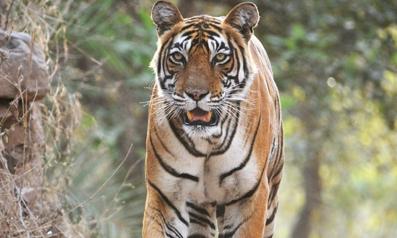
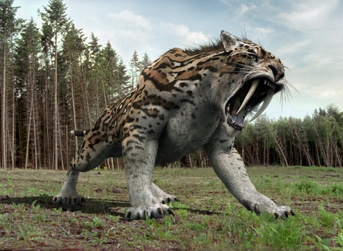

The Siberian tiger, a subspecies of tiger, is the largest cat in the world. It averages about 3.3 m (11 ft.) in length, with a tail measuring 1 m (3 ft.). Adult male Siberian tigers can weigh up to 320 kg (700 lb.), while females are significantly smaller, weighing up to 180 kg (400 lb.).
Bengal Tiger

The Bengal tiger is the most numerous species of tiger in Asia and is found in dense forests and mangrove swamps and jungles throughout India, Bangladesh, Bhutan and Nepal, although the Bengal tiger's range today is much smaller than it once was.
Saber-Toothed Tiger (Smilodon) - Ancestor

Saber-toothed tiger had thick neck, broad chest, muscular body, short, thick legs and short tail, but it is best known by its large, 7 to 12 inches long, curved canine teeth. ... Despite its huge canine tooth, saber-toothed tiger had weak bite force, only 1/3 of the bite force of modern lion.